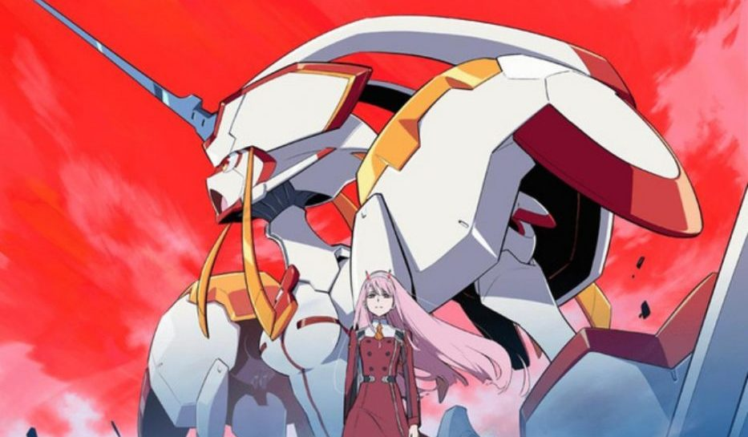

Iron Widow
June 26, 2021
I could not put this book down. A sci-fi world with aliens and mechas, inspired by Chinese history and mythology? I screamed when I saw that I got this ARC.
After her sister's death, Wu Zetian offers herself up as a concubine pilot in order to try to get vengeance on her sister's murderer. She gets her revenge by killing him through the psychic link between pilots, a previously publically unthought-of feat that gets her labeled an Iron Widow. To try to tamper her power, she gets paired with the Iron Demon Li Shimin, the strongest pilot in Huaxia.
If you're picking up this book, be sure to read through the author's note and the warnings. This book delivers on being dark. It explores the themes of gender, power, sexuality, and revenge. It delves into female rage so well, and the ways that women often aren't allowed to be angry. Zetian is very much a morally grey protagonist who has a lot of (understandable) fury at her sister's death and at the role that society has dictated she be due to being a woman. She's allowed to be brutal and bloodthirsty and unapologetically powerful by taking exactly what she wants against the wishes of the very society that would rather crush her while telling her exactly how precious women are.
"The triangle is the strongest shape, after all."
Finally, a love triangle that is an actual triangle! You don't see polyamory in YA much at all, and I was glad to see it here, especially the slow way that the relationship as a triad and between each pair of characters developed organically. Learning more about Li Shimin and Gao Yizhi through Zetian's lens and their various growth arcs was so fun.
This is Zhao's debut, and I was incredibly hooked on her writing, her prose kept me reading non-stop until the middle of the night. AND THE ENDING. Oh my god, the ending. I gasped when I read it, then immediately went to see when book 2 was. I can't wait to pick up the conclusion to this duology and all her other books in the future.
Thank you to Penguin Teen and NetGalley for the ARC.

More about Iron Widow here:

Title: Iron Widow
Author: Xiran Jay Zhao
The boys of Huaxia dream of pairing up with girls to pilot Chrysalises, giant transforming robots that can battle the mecha aliens that lurk beyond the Great Wall. It doesn't matter that the girls often die from the mental strain.
When 18-year-old Zetian offers herself up as a concubine-pilot, it's to assassinate the ace male pilot responsible for her sister's death. But she gets her vengeance in a way nobody expected—she kills him through the psychic link between pilots and emerges from the cockpit unscathed. She is labeled an Iron Widow, a much-feared and much-silenced kind of female pilot who can sacrifice boys to power up Chrysalises instead.
To tame her unnerving yet invaluable mental strength, she is paired up with Li Shimin, the strongest and most controversial male pilot in Huaxia. But now that Zetian has had a taste of power, she will not cower so easily. She will miss no opportunity to leverage their combined might and infamy to survive attempt after attempt on her life, until she can figure out exactly why the pilot system works in its misogynist way—and stop more girls from being sacrificed.